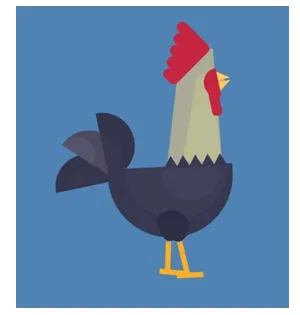

01 / ИСТОКУ каждого пути
ЛАБОРАТОРНАЯ РАБОТА · HTML + CSS
Маленькие сцены.
Живое движение.
Четыре интерактивные анимации. Нажимайте, наводите курсор
и наблюдайте, как простые формы меняют характер.
07CLICK
ПОСЛЕДОВАТЕЛЬНОЕ ПРЕВРАЩЕНИЕ
От солнца до звёзд
Нажмите на переключатель
Солнце и облако уходят влево. Затем появляется луна, загораются звёзды и темнеет небо.
День · исходное состояние
Этапы анимации
- 0–0,8 с: солнце и облако перемещаются влево.
- 0,8–1,4 с: солнце становится луной с кратерами, облако исчезает.
- 1,4–1,8 с: справа появляются точки-звёзды.
- 1,8–2,4 с: меняются фон и обводка.
- Повторное нажатие возвращает исходный день.
08HOVER
НАВЕДЕНИЕ И ПЕРЕЛИСТЫВАНИЕ
Стрелка ↔ полоска
При наведении края стрелки сходятся к центру. На границе галереи стрелка превращается в полупрозрачную полоску.
Кадр 1 из 5 · начало
Как проверить
- На первом кадре левая кнопка — полоска с прозрачностью 0,5.
- Перейдите ко второму: полоска раскрывается в стрелку, прозрачность становится 1.
- Наведите курсор или переведите фокус на доступную стрелку: её края сужаются.
- На пятом кадре правая стрелка складывается в полоску с прозрачностью 0,5.
Клавиатура: ← / →, Home и End внутри галереи.
09CLICK
ИМПУЛЬС И ЗАТУХАНИЕ
Маятник Ньютона
Нажмите на группу шариков
Первый шар отклоняется слева, возвращается и передаёт движение правому. Угол уменьшается, а колебания замедляются.
Покой
Что происходит
- До нажатия все пять шариков неподвижны.
- Левый шар отклоняется на 44°, затем возвращается.
- Правый шар отклоняется в противоположную сторону и возвращается.
- Следующие пары колебаний: 30°, 17° и 6°. Продолжительность каждого колебания растёт.
- Через 14 секунд движение полностью останавливается. Повторное нажатие на шарики запускает цикл заново.
Это стилизованная демонстрация затухания, а не физический расчёт.
19CSS ART
ПЕРСОНАЖ ИЗ HTML И CSS
Петушок оживает
Петушок покачивает головой, дышит, машет крылом и хвостом, переступает лапками и открывает клюв.
Статичный персонаж
Части персонажа и образец
- Туловище — дыхание; крыло — взмах.
- Голова и шея — наклон; глаз — моргание.
- Гребешок и бородка — отдельные покачивания.
- Клюв — открывание; хвост и каждое перо — движение веером.
- Лапки и ступни — попеременное переступание.
